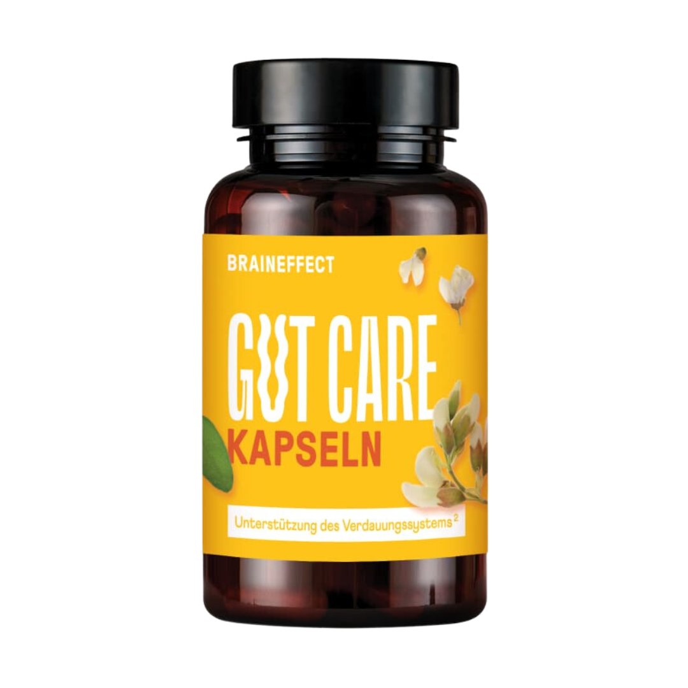
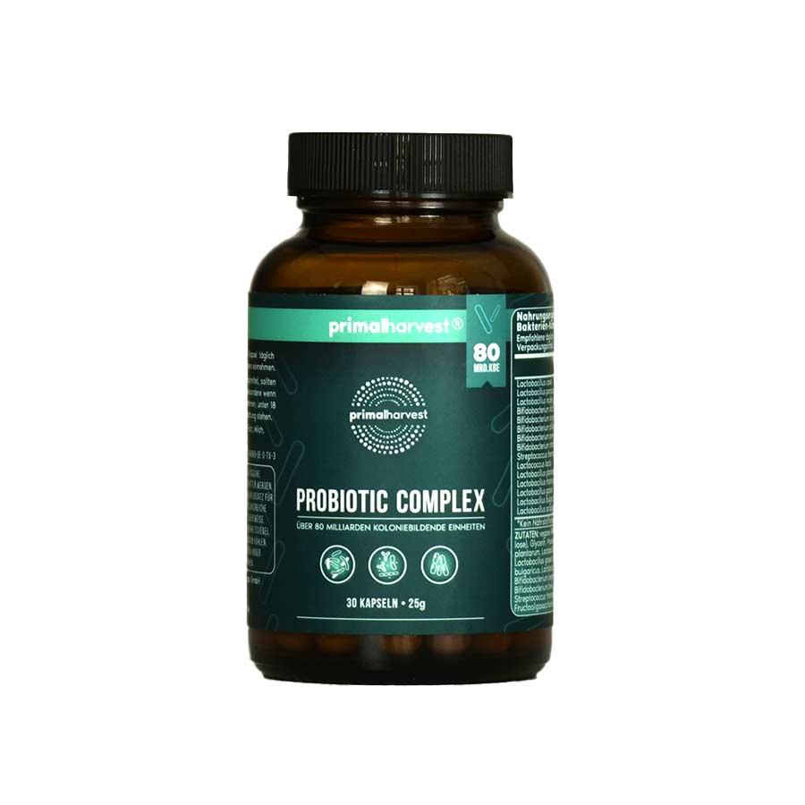
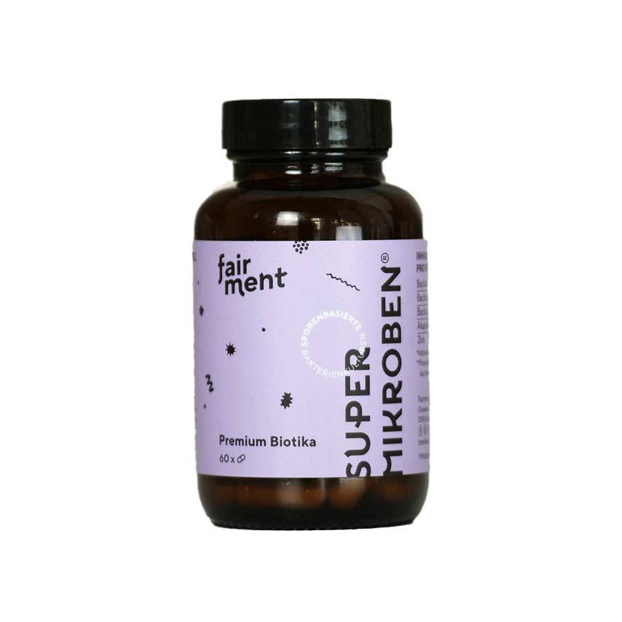
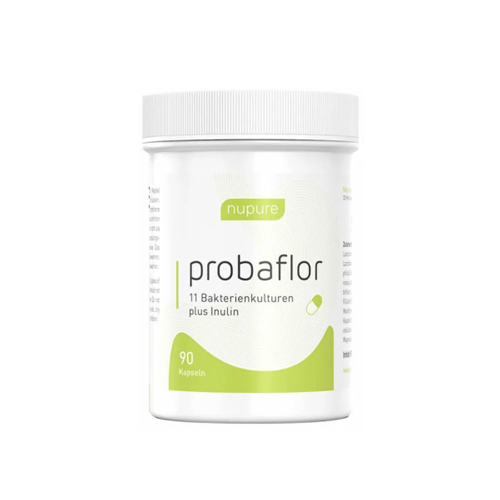
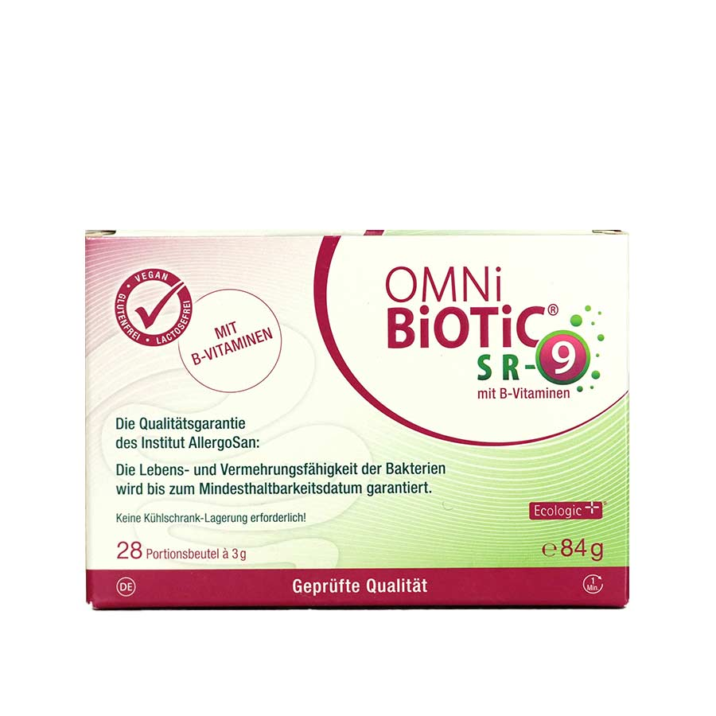

Probiotika bei Blähbauch
Wer Hilfe bei Verstopfung sucht, trifft schnell auf Probiotika. Im Vergleich zu Abführmitteln bieten probiotische Bakterienkulturen einen sanfteren Weg, die Symptome zu lindern.
ZUM ARTIKELGemeinsam mit unserem Expertengremium haben wir 11 Testkriterien auf Basis neuester wissenschaftlicher Studien und Erfahrungen aus der Praxis erstellt.
Wir haben vier Hauptkategorien definiert: Wirksamkeit, Inhaltsstoffe, Preis-Leistung und
Qualität, welche sich jeweils aus den produkt- und herstellerspezifischen Kriterien
zusammensetzen.
Jede der Hauptkategorien wird nach dem Schulnotensystem (nach IHK-
Bewertungsschlüssel Tabelle für Schulnoten) als Testergebnis für jedes Probiotikum
verglichen.
Den ausführlichen Test inkl. des besten Probiotikums für Ihre Gesundheit finden Sie hier.
Unser Ziel ist, Ihnen das beste und sicherste Probiotikum für Ihre Gesundheit zu empfehlen, welches Sie ohne Bedenken einnehmen können. Uns ist es dabei besonders wichtig, dass die Besucher unserer Webseite genau nachvollziehen können, wie wir testen und womit wir unsere Testergebnisse ermitteln. Daher möchten wir im Folgenden darauf eingehen und unser Testverfahren haargenau erklären.
Probiotika oder auch gesunde Darmbakterien sind hoch im Kurs – spätestens seit diesem Jahr.
Die Liste der Anbieter ist daher länger und länger geworden. Und eine Frage wird in der
Praxis immer wichtiger: Welches Präparat verfügt über die hochwertigste Qualität?
Wir haben marktführende Präparate und Anbieter daher ganz genau auf den Prüfstand
gestellt. Damit Sie bedenkenlos das beste Probiotikum sicher kaufen können.
Unser Team aus Gesundheits- und Lebensmittelexperten sowie Ärzten verfügt zusammen
über mehr
als 30 Jahre Erfahrung in der Bewertung von Nahrungsergänzungs- sowie Medizinprodukten.
Grund genug, einen nachvollziehbaren Leitfaden für Probiotika-Ergänzungsmittel zu
erstellen.
Mit Wissen aus der Praxis, für Sie aufbereitet. Wir haben die letzten 12
Monate damit
verbracht, die besten Probiotika-Marken in Deutschland zu testen. Damit Sie genau wissen,
worauf es bei der Auswahl ankommt und welchen Marken man uneingeschränkt trauen kann. Sie
müssen nicht länger auf ihr Bauchgefühl hören, sondern können uns bei der
Kaufentscheidung
für das beste probiotische Nahrungsergänzungsmittel vertrauen.
Wir haben die letzten 12 Monate damit verbracht, die besten Probiotika-Marken in
Deutschland zu testen. Damit Sie genau wissen, worauf es bei der Auswahl ankommt und
welchen Marken man uneingeschränkt trauen und kaufen kann. Sie müssen nicht auf ihr
Bauchgefühl hören, sondern können uns bei der Kaufentscheidung für das beste probiotische
Nahrungsergänzungsmittel vertrauen.
Wer Hilfe bei Verstopfung sucht, trifft schnell auf Probiotika. Im Vergleich zu Abführmitteln bieten probiotische Bakterienkulturen einen sanfteren Weg, die Symptome zu lindern.
ZUM ARTIKELWer an Reizdarm leidet, hat oft mit wiederkehrenden Magen-Darm-Beschwerden zu kämpfen. Probiotika sind ein Weg, ohne den Einsatz von Medikamenten Abhilfe zu schaffen.
ZUM ARTIKELBlähbauch zählt heute zu den häufigsten Magen-Darm-Beschwerden. Probiotika können diesem weitverbreiteten Problem sehr gut entgegenwirken. Erfahre mehr über das Thema Blähbauch.
ZUM ARTIKEL| VERGLEICHSSIEGER |
|
|
|
|
|
| Abbildung |
1

|
2

|
3

|
4

|
5

|
6
|
|---|---|---|---|---|---|---|
| Produktname / Hersteller |
GUT CAREBRAINEFFECT |
PROBIOTIC COMPLEXPRIMAL HARVEST |
SUPERMIKROBENFAIRMENT |
PROBAFLORNUPURE |
OMNIBIOTIC 10ALLERGOSAN |
KIJIMEA REIZDARMSYNFORMULAS |
| Testergebnis | ||||||
| Zum Angebot* | PREISE PRÜFEN | PREISE PRÜFEN | PREISE PRÜFEN | PREISE PRÜFEN | PREISE PRÜFEN | PREISE PRÜFEN |
| Zum Test | Zum Test | Zum Test | Zum Test | Zum Test | Zum Test | Zum Test |
| Bakterienstämme in richtiger Dosierung | ||||||
|---|---|---|---|---|---|---|
| Breites Anwendungsspektrum | ||||||
| Vitamine und Mineralstoffe | ||||||
| Ballaststoffe (Präbiotika) |
| Verzicht auf gefährliche Sporen | ||||||
|---|---|---|---|---|---|---|
| Verzicht auf Allergene | ||||||
| Verzicht auf Zusatzstoffe |
| Preis pro Tagesdosis | 0,99€ | 0,93€ | 1,16€ | 0,96€ | 1,5€ | 1,43€ |
|---|---|---|---|---|---|---|
| Mind. 30 Tage Vorrat | ||||||
| Geld-Zurück-Garantie | K.A. | |||||
| Unabhängige Labortests vorhanden | K.A. | K.A. | ||||
| Hergestellt in Deutschland unter GMP Standard | K.A. | K.A. | ||||
| PREISE PRÜFEN | PREISE PRÜFEN | PREISE PRÜFEN | PREISE PRÜFEN | PREISE PRÜFEN |
mit Großpackungen
Die besten Ergebnisse bei einer Darmkur erreichen Sie nach etwa 3 Monaten. Wenn Sie sich für eine Darmkur entscheiden, können Sie mit einer 3-Monats Packung bares Geld sparen.
3 MONATE GUT CARE MIT 20% RABATTDie GUT CARE Kapseln von Braineffect überzeugen mit qualitativ hochwertigen Inhaltsstoffen und dem besten Preis-Leistungs-Verhältnis
3 MONATE GUT CARE MIT 20% RABATTvon BRAINEFFECT
Achtung!
Die auf probiotika-testsieger.de zur Verfügung gestellten Informationen dürfen nicht zur Erstellung eigenständiger Diagnosen und/oder einer eigenständigen Auswahl, Anwendung oder Absetzung von Arzneimitteln und Medikamenten, sonstigen Gesundheitsprodukten oder Behandlungsmethoden verwendet werden und können den Arztbesuch in keinem Fall ersetzen.
Für eine sichere Diagnose muss immer ein Arzt aufgesucht werden. Die auf probiotika-vergleich.com zur Verfügung gestellten Inhalte und Informationen sind sorgfältig erarbeitet und werden in regelmäßigen Abständen auf ihre Richtigkeit überprüft und aktualisiert. Die Erkenntnisse in der Medizin unterliegen jedoch einem ständigen Wandel. Wir übernehmen daher keine Gewährleistung für die Vollständigkeit, Richtigkeit, Genauigkeit und Aktualität der Inhalte auf unseren Webseiten.